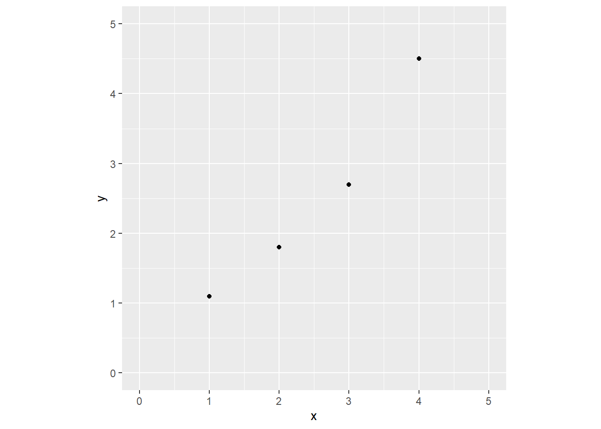
The least squared Methods
Simple Linear Model
- Given the data
| \(x\) | \(y\) |
|---|---|
| 1 | 1.1 |
| 2 | 1.8 |
| 3 | 2.7 |
| 4 | 4.5 |
Scatter plot
Which line is closer to the points?
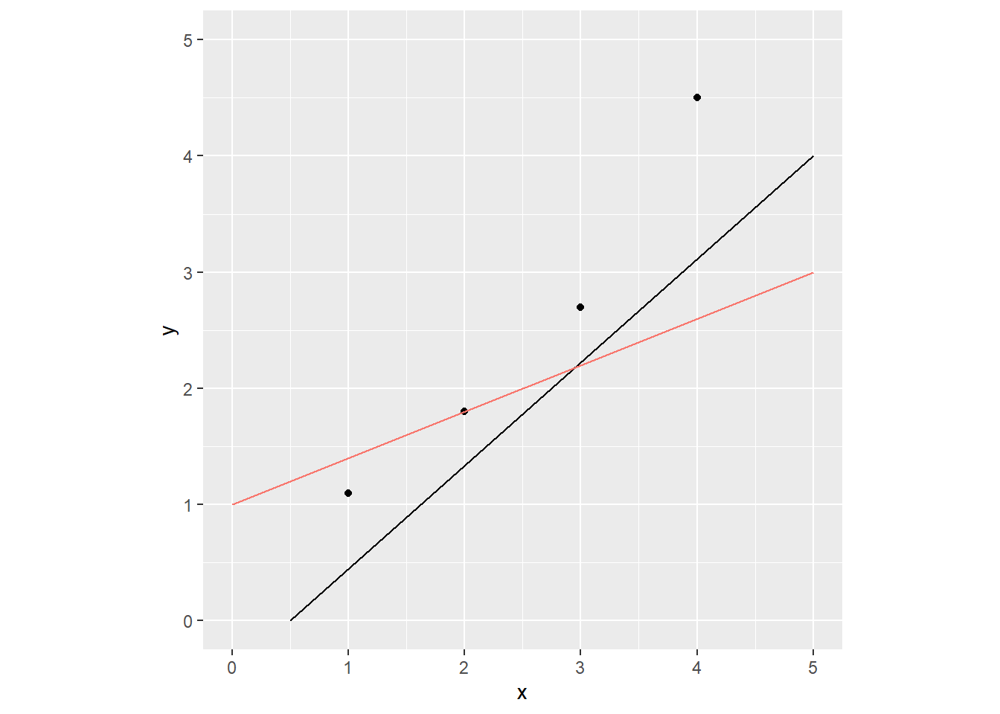
Squared Distance between a line and points
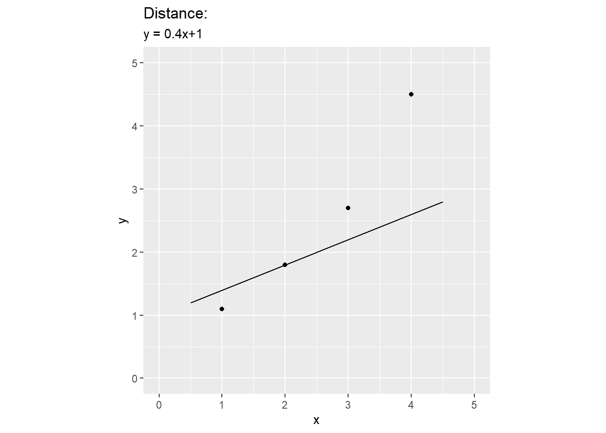
Squared Distance between a line and points
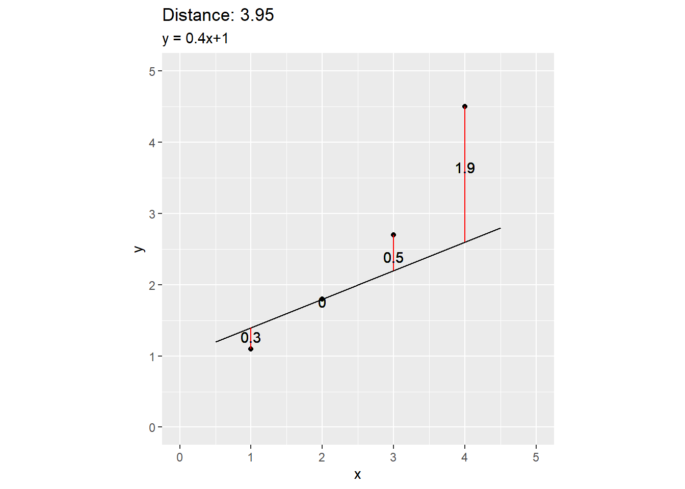
Squared Distance between a line and points
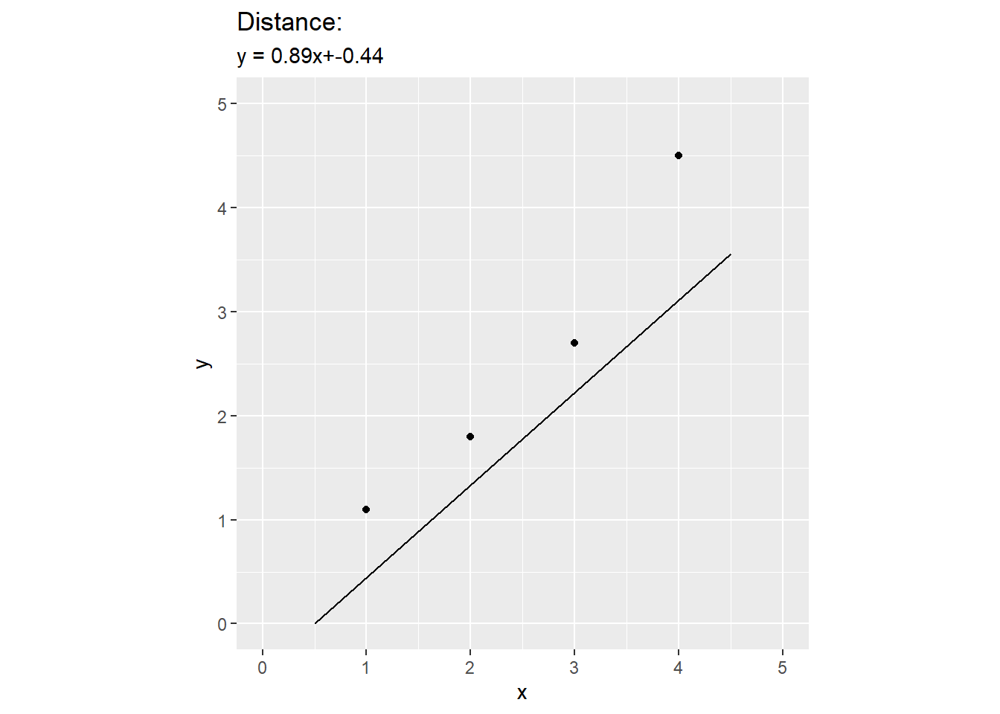
Squared Distance between a line and points
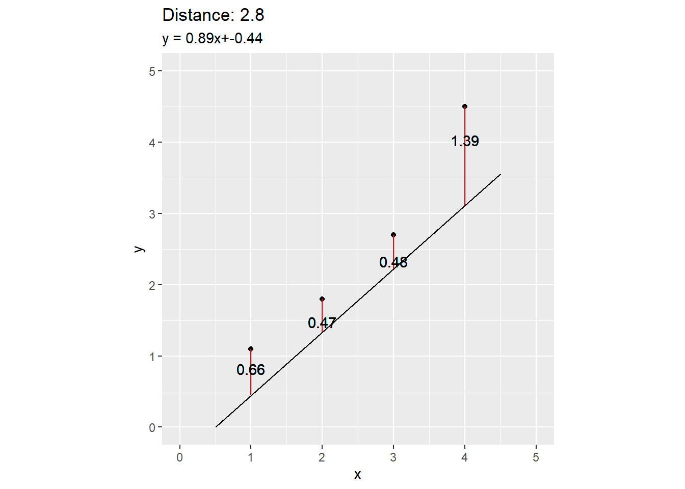
What is the closest line to the points?
The least squared methods give us the formula for the
closestline:\(y = \hat{\beta_1}x+\hat{\beta_0}\)
\(\hat{\beta_{1}} = \frac{\sum_{i=1}^{n}{(x_i-\bar{x})(y_i-\bar{y})}}{\sum_{i=1}^{n}(x_i-\bar{x})^2} = \frac{S_{xy}}{S_{xx}}\)
\(\hat{\beta_{0}} = \bar{y} - \hat{\beta_{1}}\bar{x}\)
This line is also called the best fitted line
Calculation
| \(x\) | \(y\) |
|---|---|
| 1 | 1.1 |
| 2 | 1.8 |
| 3 | 2.7 |
| 4 | 4.5 |
Calculation
| \(x\) | \(y\) | \(xy\) | \(x^2\) | |
|---|---|---|---|---|
| 1 | 1.1 | |||
| 2 | 1.8 | |||
| 3 | 2.7 | |||
| 4 | 4.5 | |||
| \(\sum\) |
Calculation
| \(x\) | \(y\) | \(xy\) | \(x^2\) | |
|---|---|---|---|---|
| 1 | 1.1 | |||
| 2 | 1.8 | |||
| 3 | 2.7 | |||
| 4 | 4.5 | |||
| \(\sum\) |
- \(\bar{x} = \frac{1+2+3+4}{4} = 2.5\)
- \(\bar{y} = \frac{1.1+1.8+2.4+4.5}{4} = 2.525\)
Calculation
| \(x\) | \(y\) | \(xy\) | \(x^2\) | |
|---|---|---|---|---|
| 1 | 1.1 | 1.1 | 1 | |
| 2 | 1.8 | 3.6 | 4 | |
| 3 | 2.7 | 8.1 | 9 | |
| 4 | 4.5 | 18 | 16 | |
| \(\sum\) | 30.8 | 30 |
\(\hat{\beta_1} = \frac{\sum xy -n\bar{x}\bar{y}}{\sum x^2 - n\bar{x}^2} = 1.11\)
\(\hat{\beta_0} = \bar{y} - \hat{\beta_{1}}\bar{x} = -0.25\)
Graph
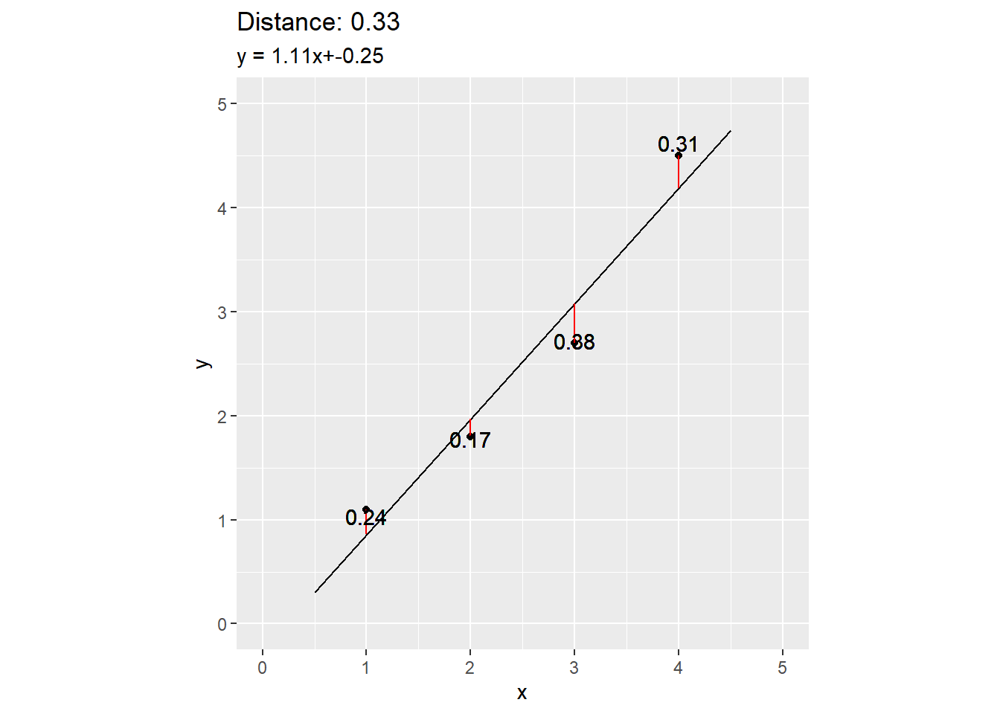
Some other lines
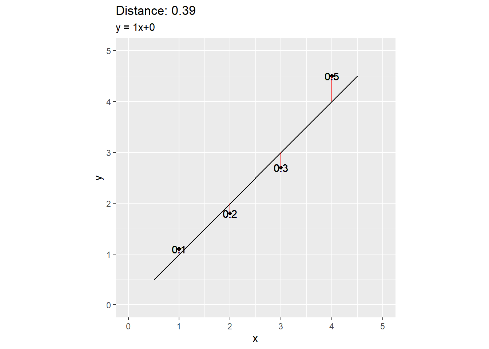
Some other lines
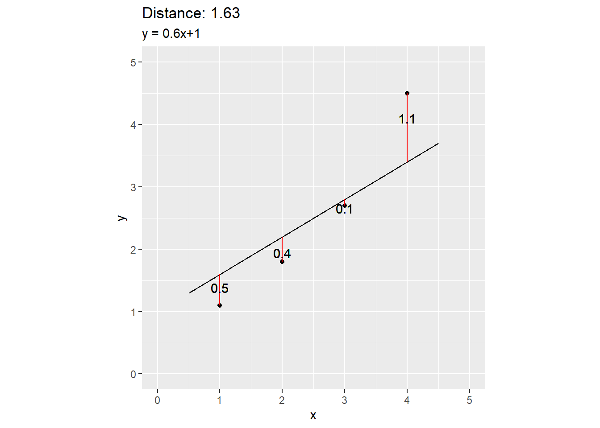
Some other lines
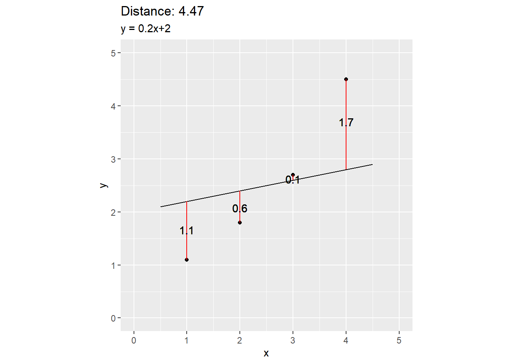
Some other lines
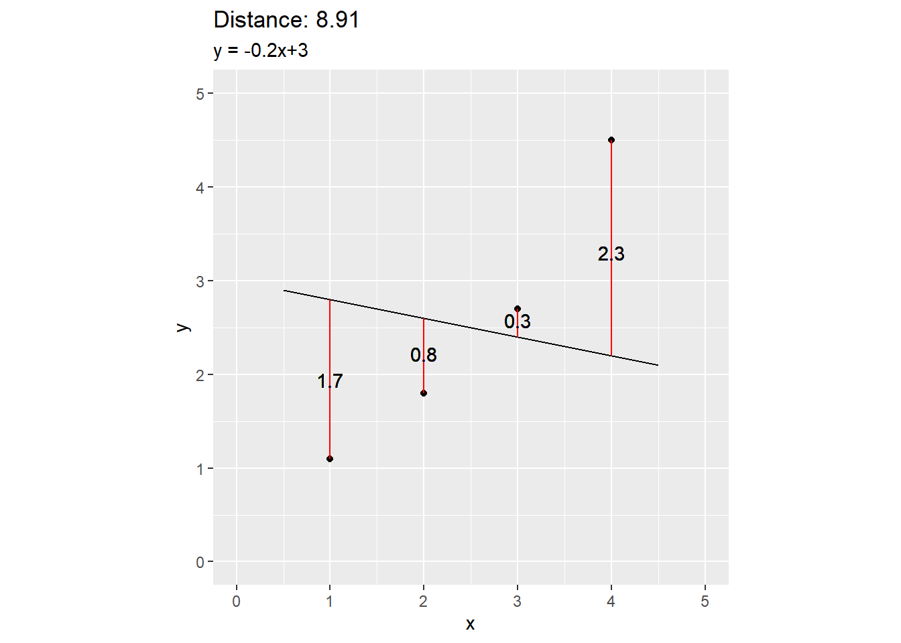
Sum Up
- The best fitted line or the least squared line is the line that is closet to the data point in term of the squared distance.